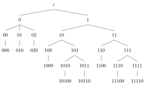
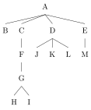

Trees in the graph-theoretic sense do not usually have a linear order. It can be added, but it is cumbersome. If one wants ordered trees, it is easier to completely change the perspective. Ordered trees may be complicated from the perspective of graphs, but intuitively they are still very simple objects. This simplicity is preserved if one treats them as labeled Gorn domains.
At the very beginning of this chapter, we saw several examples of how one and the same thing can be represented in different ways. One example we could have included there is the definition of tuples and strings in terms of functions. Just like sets can be viewed in terms of their characteristic functions, so can be strings and tuples. The idea is that the function maps each position of the tuple/string to the symbol that occurs in this position.
The string aaba can be regarded as a function \(f\) with \(0 \mapsto a\), \(1 \mapsto a\), \(2 \mapsto b\), \(3 \mapsto a\).
Each string/tuple can be regarded as function whose domain is an initial subset of the natural numbers (a set that starts with 0 and doesn’t skip any numbers). The co-domain of the function depends on the chosen alphabet.
Define the corresponding functions (with suitable domains and co-domains) for the following strings:
Assume that \(g\) is a function with domain \(\left \{ 0, 1, 2, \ldots, 7 \right \}\) such that \(g\) maps \(x\) to \(a\) if \(x\) is odd and at least 5. In all other cases, \(x\) is mapped to \(b\). What is the string defined by \(g\)?
Here’s another way of saying what we just said: each string is a pair \(\left \langle D, \ell \right \rangle\) where \(D\) is a downward-closed set of natural numbers and \(\ell\) is a labeling function from \(D\) to \(\Sigma\). By downward-closed we mean that for all \(x\) and \(y\) such that \(x < y\) and \(y \in D\), it must also be the case that \(x \in D\). So \(4 \in D\) implies \(3 \in D\), \(2 \in D\), \(1 \in D\), and \(0 \in D\).
The set \(S \mathrel{\mathop:}=\left \{ 0,1,2,4,5 \right \}\) is not downward closed because \(4 \in S\) and \(3 < 4\), yet \(3 \notin S\).
Which of the following sets are downward-closed sets of natural numbers?
This definition of strings as a pair \(\left \langle D, \ell \right \rangle\) is fully equivalent to our previous notion, but it clearly separates the relevant properties of a string:
Now think about how a tree differs from a string. We still have a set of nodes, just like with strings, and we still have to give every node a label. The only thing that is more complicated about trees is the ordering of the nodes. The order is no longer a simple line but can contain forks at any given point. This is the only complexity that trees add over strings, and it amounts to the generalization step from a linear order to a partial order.
But not any partial order will do, just like not any weakly connected graph is a tree. We still have to account for the special shape of trees. For strings, this was easy. We can look at node \(2\) and know immediately that it occurs to the right of \(1\) and \(0\), based purely on the fact that it is node \(2\). What we would like for trees is a similar system of numbering nodes that immediately allows us to infer which nodes are above the one we picked, and which are to its left.
The answer to that are Gorn addresses, named after Saul Gorn. This is a simple system that assigns each node in a tree a unique identifier that is not a number, but a string of numbers.
Let’s look once more at the very frist tree we encountered in the previous unit.
If instead of the labels we write down the Gorn addresses of each node, the tree looks as follows.

A Gorn address of node \(n\) is the result of concatenating two components:
Here is how this system is applied in the previous example:
The root node always has the address \(\varepsilon\) by convention. The nodes below the root receive the addresses \(0\) and \(1\). The reasoning is as follows: Since the address of the node above them is \(\varepsilon\), that is their first component. The first node has no other nodes to its left, so its second component is 0, and \(\varepsilon\cdot 0 = 0\). The second node has one node to its left, so we have \(\varepsilon\cdot 1 = 1\). Below \(1\) we find two nodes, whose addresses are \(10\) and \(11\). Careful here: those aren’t the natural numbers ten and eleven, those are the strings \(1 \cdot 0 = 10\) and \(1 \cdot 1 = 11\). So they should be read “one-zero” and “one-one”. Similarly, \(1110\) is not “one thousand one hundred ten”, or “one hundred eleven - zero”, it is “one-one-one-zero”.
The way we write Gorn addresses, \(11\) is ambiguous as it could be “one-one” (the second daughter of the second daughter of the root) or “eleven” (the twelfth daughter of the root). However, this is actually just a problem with our notation for natural numbers, not the actual definition of Gorn addresses. Explain why!
Hint: Suppose that we wrote numbers in hexadecimal instead, where \(11\) is \(A\). Would the Gorn address \(11\) still be ambiguous?
Since Gorn addresses follow a very specific pattern, the set of Gorn addresses for any given tree obeys two closure properties:
Consider once more our example tree, repeated here for your convenience:
You can pick any arbitrary node, say, \(111\). The prefixes of \(111\) are, in decreasing length: \(111\), \(11\), \(1\), and \(\varepsilon\). Every one of those addresses is part of the tree — they’re the addresses of the nodes that are higher than \(111\). And we can also take \(111\) and replace its last component by the smaller number \(0\) to get \(110\). That’s the address to the left of \(111\).
Annotate each node in the tree below with its Gorn address.

With Gorn addresses, is it very easy to define trees.
A \(\Sigma\)-labeled Gorn tree domain (or simply \(\Sigma\)-tree) is a pair \(\left \langle D, \ell \right \rangle\), where \(D \subseteq \mathbb{N}^*\) is the set of nodes in the tree and \(\ell: D \rightarrow \Sigma\) is a (total) labeling function. We require that \(D\) satisfies the following closure properties:
Note that the definition of \(\Sigma\)-tree is very similar to the factorized definition of strings we used above. The main difference is the choice of \(D\). For strings, \(D\) is a set of natural numbers, whereas for trees \(D\) is a set of strings over natural numbers. In fact, we can view strings as just a special case of Gorn tree domains. Suppose that instead of \(0, 1, 2, 3, \ldots\) we write \(\varepsilon, 0, 00, 000, \ldots\). So the natural numbers are just a shorthand for indicating the length of a string in \(\left \{ 0 \right \}^*\). Then every string has a domain \(D \subseteq \left \{ 0 \right \}^*\) that is both prefix-closed and downward-closed. In other words, every string satisfies the conditions for being a Gorn tree domain, and thus it is also a tree (intuitively, a string is a unary branching tree that has been rotated counterclockwise by 90 degrees).
Gorn tree domains have several advantages. First, they make it very easy to implement trees on a computer as they are a fairly simple generalization of strings. But perhaps more importantly, they also greatly simplify the task of defining common linguistic notions such as dominance and precedence.
The most basic relation in linguistic trees is mother-of, or to use a more gender-agnostic terms, parent-of. Visually, a node \(x\) is the mother of \(y\) iff \(x\) and \(y\) are connected by a single line and \(x\) is higher than \(y\). In the other direction, we say that \(y\) is a daughter or child of \(x\). So the daughter-of relation is the inverse of the mother-of relation.
Here is the by now familiar example tree:
And here is its counterpart with Gorn addresses:
The node at address \(10\) labeled VP is the parent of V and NP at address \(100\) and \(101\), respectively. This VP node is the daughter of the node at address \(1\), which is also labeled VP.
The “node above you” analogy is not a formal definition of course, it’s just a convention for how we draw those trees. If we were to rotate every tree by 90 degrees in counterclockwise fashion, then the parent would instead be to the left. In order to make the parent-of relation more precise, we once again view trees as specific sets of Gorn addresses. As mentioned before, whenever a node \(y\) is the daughter of a node \(x\), the Gorn address of \(y\) is obtained by taking the Gorn address of \(x\) and adding a natural number at the end. In other words, \(x\) is the mother of \(y\) iff \(x\) is the longest proper prefix of \(y\).
Let \(D\) be a Gorn tree domain. Then the parent-of relation \(P \subsetneq D \times D\) contains \(\left \langle x,y \right \rangle\) iff there exists some \(u \in \mathbb{N}\) such that \(y = x \cdot u\). We call \(P^{-1}\) the child-of relation.
In the previous example, we saw that \(10\) is the mother of \(100\) and \(101\). That fits the definition because \(10\) is indeed the longest proper prefix of each one of those strings. The definition works even for \(0\) and \(1\), the daughters of the root node: the root has address \(\varepsilon\), and \(0 = \varepsilon\cdot 0\) and \(1 = \varepsilon\cdot 1\).
Indicate for each one of the following pairs of nodes whether the first node is a parent of the second. You may assume that each digit is a component of the Gorn address (so 10 means “one zero”, not “ten”).
With the parent-of relation, it is also very easy to identify which nodes are parents and which are children. Note that most nodes are both. Only the root node is not a child, and only the nodes at the very bottom of a tree are not parents. These nodes are also called leaves.
For any Gorn tree domain \(D\), we call
In our example tree, the leaves are \(000\), \(010\), \(020\), \(1000\), \(10100\), \(10110\), \(1100\), \(11100\), and \(11110\).
Linguists are often interested in nodes that are closely related. The parent-of relation is arguably the closest possible relation, but the sibling or sister relation is also important. Two nodes are siblings iff they have the same parent.
Given a Gorn tree domain \(D\), the sibling relation is \(S \mathrel{\mathop:}=\left \{ \left \langle x,y \right \rangle \mid \text{$x \neq y$ and there exists a $z$ s.t. $\left \langle z,x \right \rangle \in P$ and $\left \langle z,y \right \rangle \in P$} \right \}\)
In our example tree, \(00\), \(01\), and \(02\) are all siblings of each other because they share the parent \(0\).
Indicate for each one of the following pairs of nodes whether they are siblings. You may assume that each digit is a component of the Gorn address (so 10 means “one zero”, not “ten”).
Define the sibling relation in terms of Gorn addresses rather than the parent-of relation.
Arguably the most important relation, however, is dominance. Dominance can be regarded as the tree analogue of ancestry: \(x\) dominates \(y\) iff \(x\) is the parent of \(y\), or \(x\) is the parent of the parent of \(y\), or \(x\) is the parent of the parent of the parent of \(y\), and so on. Like the parent relation, we can describe this in terms of string prefixes of Gorn addresses. Whereas \(x\) is the parent of \(y\) iff it is the longest proper prefix of \(y\), \(x\) dominates \(y\) iff it is some proper prefix of \(y\).
In our example tree, \(0\) properly dominates \(00\), \(01\), \(02\), \(000\), \(010\), and \(020\).
Indicate for each one of the following pairs of nodes whether the first dominates the second. You may assume that each digit is a component of the Gorn address (so 10 means “one zero”, not “ten”).
The way the term dominance is used in the linguistic literature is actually somewhat sloppy. Sometimes a node is taken to dominate itself, and sometimes it is not. That’s because there are two distinct notions of dominance, proper dominance and reflexive dominance, and linguists like to drop the first part of the name because the intended meaning is often clear from context. But “often” does not mean “always”, unfortunately, and adding insult to injury is that the parent-of relation is sometimes called immediate dominance. As you can see, there’s a lot of potential for confusion here, so let us make the three terms crystal clear with our formal terminology.
Let \(D\) be a Gorn domain and \(x\) and \(y\) nodes of \(D\). Then
We already know that \(0\) immediately dominates \(00\), \(01\), \(02\), which implies that it properly dominates them. In addition, it properly dominates \(000\), \(010\), and \(020\). Reflexive dominance only adds \(0\) itself (remember that every string is a prefix of itself).
The whole shift from graphs to Gorn domains was motivated by the desire to distinguish trees that are identical with respect to dominance but nonetheless define different sentences. Yet we haven’t said anything about linear order yet. Let’s change that.
As for dominance, we have to distinguish multiple types of linear order. First, we can have a linear order between siblings. Let us call this the left-of relation. This relation only holds between siblings.
We return once more to our example tree.
Here \(00\) is left-of \(01\) and \(02\), and \(01\) is left-of \(02\). Even though the nodes appear to the left of many other nodes, e.g. \(10\) and \(11\), they do not stand in the left-of relation to them.
We may also use a successor relation, which holds between two adjacent siblings. Intuitively, “successor” is just a shorter name for the inverse of “immediately left-of”.
\(00\) is immediately left-of \(01\), so \(01\) is the successor of \(00\). Similarly, \(02\) is the successor of \(01\). Again we are restricted to siblings, so \(02\) has no successor.
Note that successor in a tree is not the same as successor in the string. For instance, met is the successor of man in The old man met this girl at a party. But in the corresponding tree, met is \(1000\) whereas man is \(020\). These nodes do not stand in a successor relation.
To talk about the linear order of nodes that are not siblings, we use the precedence relation. Intuitively, a node \(a\) precedes a node \(b\) iff we can go up from \(a\), take a right branch, and keep going down until we hit \(b\).
Even though \(02\) is not left-of any node, there are many nodes it precedes. Going up from \(02\), we can reach \(0\) — taking a right branch there would only take us back to \(02\), so we instead go up one more step. Now we are at the root node. From here we can reach \(1\), \(10\), \(11\), and all nodes below them. All these nodes are preceded by \(02\).
The same procedure shows that \(01\) precedes \(020\), \(02\), and everything that node precedes.
Precedence is the natural tree counterpart to string precedence: if we restrict it to leaf nodes, we obtain the order of words in the sentence that the tree represents.
Let \(D\) be an arbitrary Gorn tree domain. Then for all \(ui,vj \in D\) with \(u,v \in \mathbb{N}^*\) and \(i,j \in \mathbb{N}\):
Indicate for each one of the following pairs of nodes whether the first precedes the second. You may assume that each digit is a component of the Gorn address (so 10 means “one zero”, not “ten”).
Some syntacticians do not like the idea of ordered trees and say that the linear order of words in a sentence is computed in a more indirect fashion from an unordered tree structure. They support this with the claim that unordered trees are simpler than ordered trees. After all, the latter has fewer relations than the former. This supposition is on very shaky grounds. It is patently false from a computational perspective, where ordered trees are much better behaved than unordered trees. Ordered trees are also easier to study from a mathematical perspective. Finally, the definition of Gorn domains shows that there is already an intrinsic ordering in trees due to how the addresses are chosen. Adding the precedence relation on top of this only makes this fully explicit.
Just to be clear, there is nothing wrong with syntacticians claiming that precedence plays no role in how languages actually work. That is an empirical issue and may well be true. But the leap from this empirical claim to the dogma that syntactic trees must not be ordered is not justified. A data structure can have internal order without that order being exploitable for any meaningful purpose. For example, suppose that we require that if some tree is well-formed, then so are all the trees we can build from it by switching the order of siblings. Or if you prefer mathematical jargon, we require the set of well-formed trees to be closed under sibling permutation. Then linear order of trees is useless: Suppose that tree \(t\) is ill-formed because it violates some precedence requirement \(P\). Then some permutation \(u\) of \(t\) must satisfy \(P\), which means that \(u\) is well-formed. But by assumption this implies that every permutation of \(u\) is also well-formed, including our original \(t\). This contradicts the initial claim that \(t\) is ill-formed, which shows that there can be no such precedence requirement \(P\).
So if you allow all possible orders, you can still have ordered trees without being able to discriminate between trees based on their precedence relations. This makes it possible for linguists to have their cake and eat it too: we get a computationally and mathematically better behaved data structure without running into the question why precedence does not seem to matter much in syntax (according to at least some syntacticians, that is).
C-command has been the most important relation in syntax for many decades. It’s importance has decreased somewhat in recent years, but it is still noteworthy for being a genuinely linguistic notion. Whereas the relations we discussed so far are also useful in computer science, c-command is a purely linguistic notion. Intuitively, a node c-commands everything its sisters reflexively dominate. If a node has no sisters, then it c-commands whatever its mother c-commands.
You know the deal, let’s look at the example tree for the gazillionth time:
Here \(01\) c-commands everything its siblings \(00\) and \(02\) reflexively dominate. That’s \(00\), \(000\), \(02\), and \(020\). The node \(010\) has no siblings, so it c-commands whatever its parent c-commands. The parent of \(010\) is \(01\), for which we have already computed the c-commandees.
Many definitions of c-command can be found in the literature, and unfortunately many of them are stated in a sloppy manner. Here is a common version: X c-commands Y iff X does not dominate Y and the first branching node dominating X dominates Y. Can you find all the things that are wrong with this definition? Think about it for a minute before you read on.
Alright, here’s the problems:
What kind of dominance are we talking about? Proper dominance, reflexive dominance, or possibly even immediate dominance? The answer is: sometimes proper dominance, sometimes reflexive dominance.
What is “the first branching node dominating X”? The lowest branching node or the highest branching node? Or something completely different?
What are X and Y? Presumably nodes, but we can only infer that because dominance is only defined for nodes, not parts of trees or sets of nodes.
A more exact version of the definition above reads as follows: Node X c-commands node Y iff X does not reflexively dominate Y and the lowest branching node properly dominating X also properly dominates Y. This is still not perfect because the meaning of “lowest” has to be intuited, but it’s good enough to be workable.
In the special case where a tree contains no unary branching nodes, i.e. nodes that have only one child, c-command can be stated in a simpler fashion as the composition of the sibling relation \(S\) with reflexive dominance: \(C \mathrel{\mathop:}=S \circ \triangleleft^*\). This just means that if we can reach \(z\) from \(x\) by first moving from \(x\) to \(y\) with the sibling relation and then from \(y\) to \(z\) via reflexive dominance, then \(x\) c-commands \(z\).
The composition of two relations \(R\) and \(S\) is \(R \circ S \mathrel{\mathop:}=\{ \left \langle x,z \right \rangle \mid \text{there is a $y$ s.t.} \left \langle x,y \right \rangle \in R \text{ and } \left \langle y,z \right \rangle \in S \}\).
Guess what, it’s your favorite tree:
In this tree, 01 c-commands 000 and 020. We can see this by computing the composition of \(S\) and \(\triangleleft^*\). First, \(S\) contains \(\left \langle 01, 00 \right \rangle\) and \(\left \langle 01, 02 \right \rangle\). We also know that \(\triangleleft^*\) contains \(\left \langle 00, 000 \right \rangle\), and \(\left \langle 02, 020 \right \rangle\). We combine \(\left \langle 01, 00 \right \rangle\) and \(\left \langle 00, 000 \right \rangle\) to obtain \(\left \langle 01, 000 \right \rangle\). The same way we also get \(\left \langle 01, 020 \right \rangle\) from \(\left \langle 01, 02 \right \rangle\) and \(\left \langle 02, 020 \right \rangle\). So \(S \circ \triangleleft^*\) must contain those two pairs, wherefore 01 c-commands 000 and 020 as stated earlier.
Suppose you are given two relations \(X \mathrel{\mathop:}=\left \{ \left \langle n,n+1 \right \rangle \mid n \geq 0 \right \}\) and \(Y \mathrel{\mathop:}=\left \{ \left \langle n,n-1 \right \rangle \mid n > 0 \right \}\). What is \(X \circ Y\)?
Given a Gorn tree domain \(D\) and \(x, y \in D\), \(x\) c-commands \(y\) iff \(\left \langle x,y \right \rangle \in S \circ \triangleleft^*\).
If we want to extend this definition to trees with unary branches, the sibling relation has to be replaced by a relation that instead chooses the siblings of an appropriate node at a structurally higher position.
Define c-command in terms of Gorn addresses (assuming our definition of c-command as the composition of the sibling relation and reflexive dominance).
Give a function that takes as input a Gorn tree domain \(D\) and a Gorn address \(a\) and returns the set of all \(d \in D\) that c-command \(a\) (assuming again our definition of c-command as the composition of the sibling relation and reflexive dominance). Looking at this function, would you say it is particularly complex or difficult to compute?